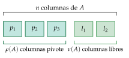
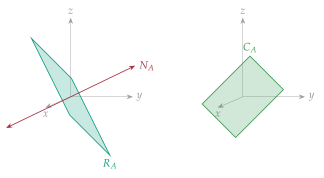

Parcial 2 · Espacios fundamentales, cambio de base y ortogonalidad
Para arrancar¿Cuántas soluciones puede tener Ax=b? Spoiler: 0, 1 o infinitas, nunca 2. Hoy entendemos por qué, mirando los espacios que esconde cada matriz.
Toda matriz A de tamaño m×n lleva asociados tres subespacios que resumen casi todo lo que puede decirse de ella como objeto de álgebra lineal: el generado por sus renglones, el generado por sus columnas y el conjunto de soluciones del sistema homogéneo Ax=0. En este capítulo los definimos, aprendemos a calcular una base de cada uno con la eliminación de Gauss–Jordan y demostramos las dos igualdades que los amarran: la dimensión del espacio renglón coincide con la del espacio columna (el rango), y el rango más la dimensión del espacio nulo (la nulidad) es igual al número de columnas. Al final usamos todo esto para entender, sin más cálculos, cuándo un sistema Ax=b tiene solución y cuándo esa solución es única.
Trabajamos siempre con R como cuerpo de escalares, y con las nociones de subespacio, combinación lineal, espacio generado, independencia lineal, base y dimensión ya estudiadas. También usamos que el producto Ax tiene como componente i el producto punto del renglón i de A con x.
4.1 Espacio renglón y espacio columna
Una matriz A de tamaño m×n puede leerse de dos maneras: como una pila de m vectores de Rn (sus renglones) o como una fila de n vectores de Rm (sus columnas). Escribimos A=a11a21⋮am1a12a22⋮am2⋯⋯⋯a1na2n⋮amn,ri=(ai1,ai2,…,ain),cj=a1ja2j⋮amj, de modo que r1,…,rm∈Rn son los vectores renglón y c1,…,cn∈Rm son los vectores columna de A.
Sea A una matriz m×n con renglones r1,…,rm y columnas c1,…,cn.
El espacio renglón de A es el subespacio de Rn generado por sus renglones: RA=gen{r1,r2,…,rm}.
El espacio columna de A es el subespacio de Rm generado por sus columnas: CA=gen{c1,c2,…,cn}.
Ambos son subespacios porque el conjunto generado por cualquier familia finita de vectores lo es. Observa en qué espacio vive cada uno: RA⊆Rn (el número de columnas) y CA⊆Rm (el número de renglones).
Escribe los vectores renglón y los vectores columna de A=(0−213−14).
Soluciónintenta primero
La matriz es 2×3. Sus renglones son r1=(0,1,−1) y r2=(−2,3,4), dos vectores de R3. Sus columnas son c1=(0−2),c2=(13),c3=(−14), tres vectores de R2. Así, RA=gen{r1,r2}⊆R3 y CA=gen{c1,c2,c3}⊆R2.
Determina el espacio renglón y el espacio columna de A=(1326).
Soluciónintenta primero
Los renglones son r1=(1,2) y r2=(3,6)=3r1. Como r2 es múltiplo de r1, no aporta nada nuevo al generado: RA=gen{(1,2),(3,6)}=gen{(1,2)}={(x,y)∈R2∣y=2x}, una recta por el origen de R2. Las columnas son c1=(13) y c2=(26)=2c1, de modo que CA=gen{(13)}={(x,y)∈R2∣y=3x}, otra recta por el origen, distinta de la anterior. Ambas tienen dimensión 1, un hecho que el teorema 4.17 generalizará. Nota que RA=CA aunque A sea cuadrada: son subespacios de espacios distintos que, por casualidad de tamaño, se dibujan en el mismo plano.
Antes de seguir conviene reescribir el producto de una matriz por un vector de una manera que usaremos una y otra vez.
Proposición 4.4· El producto como combinación lineal de columnas
Sea A una matriz m×n con columnas c1,…,cn y sea x=(x1,…,xn)T∈Rn. Entonces Ax=x1c1+x2c2+⋯+xncn. En consecuencia, CA={Ax∣x∈Rn}.
Demostraciónmostrar
La componente i de Ax es ∑j=1naijxj. La componente i de x1c1+⋯+xncn es ∑j=1nxjaij, porque la componente i de cj es aij. Ambas expresiones son iguales para cada i, luego los vectores coinciden. Por definición, un vector está en CA=gen{c1,…,cn} si y solo si es de la forma x1c1+⋯+xncn para ciertos escalares xj, es decir, si y solo si es de la forma Ax.
Sea A=103−11−3. (a) Determina si b=123 está en el espacio columna de A. (b) Determina si w=(4,5) está en el espacio renglón de A. (c) Describe RA y CA.
Soluciónintenta primero
(a) Por la proposición 4.4, b∈CA si y solo si el sistema Ax=b tiene solución. Reducimos la matriz aumentada: 103−11−3123F3→F3−3F1100−110120F1→F1+F2100010320. El sistema es consistente y x=(3,2)T. Se comprueba: 3103+2−11−3=123=b. Por tanto, b∈CA.
(b) Los renglones son r1=(1,−1), r2=(0,1) y r3=(3,−3)=3r1. Buscamos α,β con w=αr1+βr2, es decir, (4,5)=(α,−α+β). De la primera componente, α=4; de la segunda, β=5+α=9. Luego w=4r1+9r2∈RA.
(c) Los vectores r1=(1,−1) y r2=(0,1) son linealmente independientes (ninguno es múltiplo del otro) y generan RA, así que dimRA=2. Como RA⊆R2 y dimR2=2, resulta RA=R2 (lo que explica por qué cualquier w, como el del apartado (b), pertenece a RA). Para CA, un vector (x,y,z)T está en CA si y solo si el sistema x1−x2=x,x2=y,3x1−3x2=z tiene solución. De las dos primeras ecuaciones, x2=y y x1=x+y; al sustituir en la tercera, 3(x+y)−3y=3x, que debe ser igual a z. Por tanto el sistema es consistente exactamente cuando z−3x=0: CA=⎩⎨⎧xyz∈R3z=3x⎭⎬⎫, un plano de R3 que pasa por el origen. Coincide con gen{c1,c2}, donde c1=(1,0,3)T y c2=(−1,1,−3)T, y c1,c2 satisfacen z=3x.
4.2 Operaciones elementales y espacio renglón
Para calcular una base de RA nos gustaría reemplazar A por una matriz más simple sin perder el espacio. El siguiente teorema dice que las operaciones elementales de renglón lo permiten.
Teorema 4.6· El espacio renglón es invariante por operaciones de renglón
Si A y B son matrices m×n equivalentes por renglones, entonces RA=RB.
Demostraciónmostrar
Basta probarlo cuando B se obtiene de A con una operación elemental; el caso general sigue por inducción sobre el número de operaciones, ya que la igualdad de conjuntos es transitiva.
Paso 1: RB⊆RA. Sean r1,…,rm los renglones de A. Según la operación aplicada, los renglones de B son:
para Fi↔Fj: los mismos rk, en otro orden;
para Fi→cFi con c=0: los mismos rk salvo ri, sustituido por cri;
para Fi→Fi+cFj (i=j): los mismos rk salvo ri, sustituido por ri+crj.
En los tres casos, cada renglón de B es combinación lineal de r1,…,rm, luego pertenece al subespacio RA. Como RB es el menor subespacio que contiene a los renglones de B (todo subespacio que los contiene contiene sus combinaciones lineales), se tiene RB⊆RA.
Paso 2: RA⊆RB. La operación inversa también es elemental: Fi↔Fj es su propia inversa, Fi→cFi se deshace con Fi→c−1Fi (aquí se usa c=0), y Fi→Fi+cFj se deshace con Fi→Fi−cFj. Por tanto, A se obtiene de B con una operación elemental y el paso 1, aplicado con los papeles intercambiados, da RA⊆RB.
De los dos pasos, RA=RB.
Observación · Lo que sí y lo que no cambia con las operaciones de renglón
El teorema 4.6 afirma que el espacio renglón no se altera. En cambio, las operaciones de renglón pueden modificar el espacio columna. En el ejemplo 4.3, la matriz A=(1326) se transforma con F2→F2−3F1 en B=(1020). Se tiene RA=RB=gen{(1,2)}, pero CA=gen{(1,3)T} mientras que CB=gen{(1,0)T}, y estas dos rectas son distintas. Sin embargo, algo de las columnas sí sobrevive: en ambas matrices la segunda columna es el doble de la primera. Esa es la idea que precisaremos en el teorema 4.13.
Si A es equivalente por renglones a una matriz B en forma escalonada, entonces los renglones no nulos de B forman una base de RA. En particular, si B es la forma escalonada reducida de A, sus renglones no nulos son una base de RA.
Demostraciónmostrar
Por el teorema 4.6, RA=RB, así que basta ver que los renglones no nulos b1,…,br de B son una base de RB.
Generan. Los renglones nulos de B son el vector cero, que no aporta nada a un conjunto generador. Así RB=gen{b1,…,br}.
Son linealmente independientes. Sea ji la columna del primer elemento no nulo (el pivote) de bi. Por ser B escalonada, j1<j2<⋯<jr, y todas las entradas de la columna ji situadas debajo del pivote de bi son cero; es decir, la componente ji de bk es cero para k>i. Supongamos a1b1+⋯+arbr=0 con los ai no todos nulos y sea i0 el menor índice con ai0=0. Miremos la componente ji0 de la combinación: los términos con i<i0 tienen coeficiente 0, los términos con i>i0 aportan 0 (por lo anterior), y bi0 aporta su pivote, distinto de cero. Luego esa componente vale ai0⋅(pivote)=0, en contradicción con que la combinación sea 0. Por tanto, todos los ai son cero.
Halla una base de RA para A=1−30−240500310.
Estrategia.
Llevar A a su forma escalonada reducida y leer los renglones no nulos.
Soluciónintenta primero
El tercer renglón ya es nulo. Eliminamos debajo del primer pivote, normalizamos el segundo pivote y eliminamos encima de él: 1−30−240500310F2→F2+3F1100−2−2051503100F2→−21F2100−2105−21503−50F1→F1+2F2100010−10−2150−7−50. Por el teorema 4.7, una base de RA es {(1,0,−10,−7),(0,1,−215,−5)} y dimRA=2. Es válida también la base {(1,−2,5,3),(0,1,−215,−5)} obtenida de la forma escalonada no reducida.
Ejemplo 4.9· Base del espacio renglón de una matriz 4×4
Halla una base de RA para A=1247−10−2−31023−111−1.
Soluciónintenta primero
Eliminamos por debajo del primer pivote: 1247−10−2−31023−111−1F2→F2−2F1,F4→F4−7F1F3→F3−4F11000−12241−2−2−4−1356. Normalizamos el segundo pivote y eliminamos debajo de él: F2→21F21000−11241−1−2−4−12356F3→F3−2F2F4→F4−4F21000−11001−100−12320. El tercer pivote está en la cuarta columna. Lo normalizamos y limpiamos la columna 4 y la columna 2 por encima: F3→21F31000−11001−100−12310F1→F1+F2100001000−100212310F1→F1−21F3F2→F2−23F3100001000−1000010. Los renglones no nulos forman la base {(1,0,0,0),(0,1,−1,0),(0,0,0,1)} de RA, que tiene dimensión 3. Los cuatro renglones de A generan entonces un subespacio de R4 de dimensión menor que 4, y por eso tienen que ser linealmente dependientes; en efecto, el renglón nulo final indica que r4=3r1+2r2 (se comprueba directamente: 3(1,−1,1,−1)+2(2,0,0,1)=(7,−3,3,−1)).
Ejemplo 4.10· Base del subespacio generado por tres vectores
Halla una base del subespacio S=gen{v1,v2,v3} de R3, con v1=(−1,2,5), v2=(3,0,3), v3=(5,1,8).
Estrategia.
Un subespacio generado por vectores de Rn es el espacio renglón de la matriz que los tiene por renglones.
Soluciónintenta primero
Sea A la matriz cuyos renglones son v1,v2,v3; entonces S=RA. Reducimos: −135201538F1→−F1135−201−538F2→F2−3F1F3→F3−5F1100−2611−51833F2→61F2100−2111−5333F3→F3−11F2F1→F1+2F2100010130. Por el teorema 4.7, {(1,0,1),(0,1,3)} es una base de S, y dimS=2. Como S está generado por tres vectores pero tiene dimensión 2, los tres son linealmente dependientes, y S es un plano de R3: sus puntos son a(1,0,1)+b(0,1,3)=(a,b,a+3b), es decir, S={(x,y,z)∣z=x+3y} (compruébese con v1: −1+6=5).
InteractivoGauss–Jordan paso a paso, con fracciones exactas
Escribe una matriz o escoge un ejemplo, y avanza operación por operación.
4.3 Base del espacio columna
El teorema 4.7 no sirve directamente para las columnas, porque las operaciones de renglón sí pueden cambiar CA. Hay dos remedios: uno inmediato, que consiste en cambiar el papel de renglones y columnas, y otro más fino, que produce una base formada por columnas de la propia A.
Proposición 4.11· El espacio columna es el renglón de la transpuesta
Si A es una matriz m×n, entonces CA=RAT.
Demostraciónmostrar
Los renglones de AT son, por definición de transpuesta, las columnas de A escritas como vectores fila. Así, RAT y CA son el subespacio generado por los mismos n vectores (identificando Rm con vectores fila o columna).
Por consiguiente, para hallar una base de CA basta reducir AT y leer sus renglones no nulos, como indica el teorema 4.7. Las columnas se obtienen entonces reescribiendo esos renglones en vertical.
Ejemplo 4.12· Base del espacio columna por transposición
Halla una base de CA para A=10−33231040116−2−430−11−2.
Soluciónintenta primero
Formamos AT, cuyos renglones son las columnas de A, y la reducimos: AT=13130110−306−134−2120−4−2F2→F2−3F1F3→F3−F1,F4→F4−3F110000110−39983−5−5−82−6−6−8F3→F3−F2F4→81F410000100−39013−50−12−60−1F2→F2−9F4F1→F1+3F4100001000001040−1−130−1. (El renglón nulo puede quedar donde está o pasarse al final.) Los tres renglones no nulos dan la base CA=gen⎩⎨⎧1000−1,01043,001−1−1⎭⎬⎫,dimCA=3. Estos tres vectores no son columnas de A. Una comprobación: c1=(1,0,−3,3,2)T es igual a 1⋅(1,0,0,0,−1)T−3⋅(0,0,1,−1,−1)T, así que c1 pertenece al espacio que generan.
Si queremos una base de CA formada por columnas de A (útil, por ejemplo, para expresar el resto de columnas como combinación de ellas), hay que entender qué conservan las operaciones de renglón sobre las columnas. El siguiente teorema lo precisa: las columnas cambian, pero las relaciones de dependencia entre ellas no.
Teorema 4.13· Las relaciones de dependencia entre columnas se conservan
Sean A y B matrices m×n equivalentes por renglones, con columnas a1,…,an y b1,…,bn respectivamente. Para todo x=(x1,…,xn)T∈Rn, x1a1+⋯+xnan=0⟺x1b1+⋯+xnbn=0. En consecuencia:
un subconjunto de columnas {aj}j∈J es linealmente independiente si y solo si {bj}j∈J lo es;
ak=∑j∈Jλjaj si y solo si bk=∑j∈Jλjbj, con los mismos coeficientes λj.
Demostraciónmostrar
Por la proposición 4.4, x1a1+⋯+xnan=Ax y x1b1+⋯+xnbn=Bx; hay que probar entonces que Ax=0⟺Bx=0. Basta hacerlo cuando B se obtiene de A con una sola operación elemental y luego iterar. Como en la prueba del teorema 4.6, cada renglón de B es combinación lineal de los renglones de A; digamos que el renglón i de B es ∑kμikrk. Entonces, la componente i de Bx es el producto punto (k∑μikrk)⋅x=k∑μik(rk⋅x)=k∑μik(Ax)k, que vale 0 si Ax=0. Así Ax=0⇒Bx=0. Como A también se obtiene de B por una operación elemental (la inversa), el mismo argumento da Bx=0⇒Ax=0. Esto prueba la equivalencia del enunciado.
(a) Un subconjunto {aj}j∈J es linealmente dependiente si y solo si existe x=0 con xj=0 para j∈/J y Ax=0. Por la equivalencia, esa misma x cumple Bx=0, así que {bj}j∈J también es dependiente; y recíprocamente. Por contrarrecíproca, uno es independiente si y solo si el otro lo es.
(b) La igualdad ak=∑j∈Jλjaj equivale a Ax=0 para el vector x con xk=−1, xj=λj si j∈J y xj=0 en las demás posiciones; por la equivalencia, esto ocurre si y solo si Bx=0, es decir, si y solo si bk=∑j∈Jλjbj.
Ejemplo 4.14· Comparación de las relaciones de dependencia
Compara las relaciones de dependencia entre las columnas de A=10−33231040116−2−430−11−2 y las de su forma escalonada reducida.
Soluciónintenta primero
Reducimos A a su forma escalonada reducida E: AF3→F3+3F1F4→F4−3F1,F5→F5−2F110000319−5−6119−5−6308−8−8F1→F1−3F2,F3→F3−9F2F4→F4+5F2,F5→F5+6F21000001000−21000308−8−8F3→81F31000001000−21000301−8−8F1→F1−3F3F4→F4+8F3,F5→F5+8F31000001000−2100000100=E. En E, con columnas e1,…,e4, se lee de inmediato que e3=−2e1+e2, y que e1,e2,e4 son independientes (son vectores canónicos distintos). Por el teorema 4.13, las mismas relaciones valen en A: c3=−2c1+c2,c1,c2,c4linealmente independientes. Comprobación directa: −2(1,0,−3,3,2)T+(3,1,0,4,0)T=(1,1,6,−2,−4)T=c3. Sin embargo, CA=CE: todos los vectores de CE tienen nulas las componentes cuarta y quinta (las filas 4 y 5 de E son cero), y c1=(1,0,−3,3,2)T no las tiene. Es lo que anunciamos: la forma escalonada conserva las relaciones entre columnas, no las columnas.
Ya podemos enunciar la manera de escoger una base de CA dentro de las propias columnas de A.
Sea R la forma escalonada reducida de una matriz A, y sean j1<⋯<jr los índices de las columnas de R que contienen un pivote. Entonces las columnas cj1,…,cjr de la matriz originalA forman una base de CA. Además, cada otra columna se escribe como ck=i=1∑rRikcji, donde Rik es la entrada (i,k) de R.
Demostraciónmostrar
Sean e1,…,em los vectores canónicos de Rm y sean ρ1,…,ρn las columnas de R. Por ser R escalonada reducida, la columna del i-ésimo pivote es ρji=ei (tiene un 1 en la fila i y ceros en las demás). Además, los renglones r+1,…,m de R son nulos, de modo que cualquier otra columna ρk tiene ceros a partir de la fila r+1 y ρk=i=1∑rRikei=i=1∑rRikρji. Así, las columnas pivote de R son linealmente independientes (son canónicos distintos) y cualquier otra columna es combinación lineal de ellas: son una base de CR.
Ahora pasamos a A. Como A y R son equivalentes por renglones, el teorema 4.13(a) dice que cj1,…,cjr son linealmente independientes, y el teorema 4.13(b), aplicado a cada ρk=∑iRikρji, da ck=∑iRikcji con los mismos coeficientes. Por tanto, cj1,…,cjr generan a todas las columnas de A, esto es, a CA, y son independientes: forman una base de CA.
Advertencia: las columnas se toman de la matriz original
Las columnas pivote de R son siempre e1,…,er, y por lo general no están en CA. Lo que se conserva al reducir es la posición de las columnas independientes, no las columnas mismas. Se lee en Rcuáles columnas usar, y se toman de A. (Basta también con una forma escalonada no reducida para ubicar los pivotes, pero la reducida permite además leer los coeficientes Rik.)
Ejemplo 4.16· Base de CA formada por columnas de A
Halla una base del espacio columna de la matriz A de los ejemplos 4.12 y 4.14.
Soluciónintenta primero
En el ejemplo 4.14 obtuvimos la forma escalonada reducida E, con pivotes en las columnas 1, 2 y 4. Por el teorema 4.15, una base de CA está formada por las columnas 1, 2 y 4 de A: ⎩⎨⎧10−332,31040,30−11−2⎭⎬⎫. Además, la tercera columna se expresa como c3=−2c1+c2. Nota que esta base es distinta de la que se obtuvo en el ejemplo 4.12 por transposición, pero tiene el mismo número de elementos: dimCA=3. Ambas son bases del mismo subespacio.
4.4 El rango de una matriz
Los dos procedimientos anteriores sugieren que RA y CA, aunque viven en espacios distintos, tienen «el mismo tamaño». Es el primer resultado profundo del capítulo.
Si A es una matriz m×n, entonces el espacio renglón y el espacio columna de A tienen la misma dimensión. Más precisamente, ambas son iguales al número r de pivotes de la forma escalonada reducida de A.
Demostraciónmostrar
Sea R la forma escalonada reducida de A, con r pivotes; es decir, con exactamente r renglones no nulos. Por el teorema 4.7, los r renglones no nulos de R forman una base de RA, así que dimRA=r. Por el teorema 4.15, las r columnas de A situadas en las posiciones de los pivotes forman una base de CA, así que dimCA=r. Luego dimRA=r=dimCA.
El rango de una matriz A, denotado ρ(A), es la dimensión de su espacio renglón (que es también la de su espacio columna): ρ(A)=dimRA=dimCA.
El teorema 4.17 tiene consecuencias inmediatas. Como RA⊆Rn y CA⊆Rm, se cumple ρ(A)≤min{m,n}. Como los renglones de A son las columnas de AT, la proposición 4.11 aplicada a AT da RA=CAT, de donde ρ(A)=dimRA=dimCAT=ρ(AT). Y como el rango es el número de pivotes de la forma escalonada, es una cantidad que se lee directamente de la reducción.
Ejemplo 4.19· Base de un subespacio generado por columnas
Sea H el subespacio de R4 generado por las columnas x1,x2,x3,x4 de A=1−145−33−11−22364−454. (a) Encuentra una base de H. (b) Encuentra dimH.
Soluciónintenta primero
Como H=CA, aplicamos el teorema 4.15. Reducimos A: AF2→F2+F1F3→F3−4F1,F4→F4−5F11000−301116−20111640−11−16F3→111F3F4→161F41000−3011−201140−1−1F4→F4−F31000−3010−201040−10F1→F1+3F310000010101010−10. (Tras intercambiar los renglones 2 y 3 queda la forma escalonada reducida usual con pivotes en las columnas 1 y 2.) Los pivotes están en las columnas 1 y 2; luego {x1,x2} es una base de H y dimH=2. Las otras dos columnas se escriben con los coeficientes leídos en la reducida: x3=x1+x2 y x4=x1−x2. Se comprueba: x1+x2=(−2,2,3,6)T=x3 y x1−x2=(4,−4,5,4)T=x4.
Ya es casi escalonada; falta anular la entrada (3,2): AF3→F3−F2100−21005−21−38F3→−21F3100−2100511−3−4F2→F2−5F3100−210001117−4F1→F1+2F21000100013517−4. Hay tres pivotes (columnas 1, 2 y 3), así que ρ(A)=3. Como A tiene solo tres renglones, estos son linealmente independientes y RA es un subespacio de R4 de dimensión 3; CA=R3, porque es un subespacio de dimensión 3 dentro de R3.
4.5 El espacio nulo y la nulidad
Además de los renglones y las columnas, hay un tercer subespacio ligado a A que no se define como un generado, sino como el conjunto solución de un sistema.
Sea A una matriz m×n. El espacio nulo de A es el conjunto de las soluciones del sistema homogéneo Ax=0: NA={x∈Rn∣Ax=0}. Su dimensión se llama la nulidad de A y se denota ν(A)=dimNA.
Como NA es el conjunto solución de Ax=0, se calcula así: (1) se lleva A a su forma escalonada reducida R (las operaciones de renglón no cambian el conjunto solución, teorema 4.13); (2) se despejan las variables pivote en función de las variables libres; (3) se escribe la solución general como combinación lineal de vectores, uno por cada variable libre. Esos vectores generan NA y, como se verá en la demostración del teorema 4.24, son linealmente independientes.
Encuentra el espacio nulo de A=131262−2−50143.
Soluciónintenta primero
Resolvemos Ax=0 reduciendo A (la columna de ceros del lado derecho no cambia, y por eso se omite): AF2→F2−3F1F3→F3−F1100200−212112F3→F3−2F2100200−210110F1→F1+2F2100200010310. Los pivotes están en las columnas 1 y 3; las variables libres son x2 y x4. El sistema equivalente es x1+2x2+3x4=0, x3+x4=0, esto es x1=−2x2−3x4 y x3=−x4. Con x2=s, x4=t: x1x2x3x4=−2s−3ts−tt=s−2100+t−30−11. Por tanto, NA=gen⎩⎨⎧−2100,−30−11⎭⎬⎫. Estos dos vectores son linealmente independientes: en las coordenadas de las variables libres (x2,x4) valen (1,0) y (0,1), de modo que una combinación sv1+tv2=0 obliga a s=t=0. Luego ν(A)=2. Comprobación con el segundo vector: A(−3,0,−1,1)T=(−3+2+1,−9+5+4,−3+0+3)T=(0,0,0)T.
4.6 El teorema fundamental: rango más nulidad
Los dos números ρ(A) y ν(A) no son independientes: cada columna de A es, o bien una columna pivote (y cuenta para el rango), o bien una columna libre (y cuenta para la nulidad). Esto es exactamente lo que dice el siguiente teorema.
Sea A una matriz m×n. Entonces ρ(A)+ν(A)=n, es decir, rango más nulidad es igual al número de columnas.
Demostraciónmostrar
Sea R la forma escalonada reducida de A, con r=ρ(A) pivotes en las columnas j1<⋯<jr. Sean f1<⋯<fk las restantes columnas (las columnas libres), de modo que k=n−r. Como Ax=0⟺Rx=0 (teorema 4.13), es NA=NR, y basta calcular dimNR. Vamos a probar que dimNR=k=n−r.
Forma de las soluciones. El renglón i de R (1≤i≤r) tiene un 1 en la columna ji, ceros en las demás columnas pivote, y entradas Ri,f en las columnas libres f. La ecuación i de Rx=0 dice entonces xji+s=1∑kRi,fsxfs=0,o seaxji=−s=1∑kRi,fsxfs. (Los renglones nulos de R no imponen condición.) Así, las variables libres xf1,…,xfk pueden tomar valores cualesquiera, y ellas determinan de forma única las variables pivote.
Los vectores v1,…,vk. Para cada s=1,…,k sea vs∈Rn la solución de Rx=0 que se obtiene tomando xfs=1 y xft=0 para t=s; sus componentes pivote son (vs)ji=−Ri,fs (por la fórmula anterior).
Generan NR. Sea x∈NR y sea y=∑s=1kxfsvs. Como NR es un subespacio (teorema 4.22), y∈NR. La componente libre ft de y es ∑sxfs(vs)ft=xft, pues (vs)ft es 1 si s=t y 0 si no. Entonces x e y son dos soluciones con las mismas variables libres; como estas determinan las variables pivote, x=y. Luego NR=gen{v1,…,vk}.
Son linealmente independientes. Si ∑sαsvs=0, la componente ft de esta combinación es αt (por el mismo motivo: (vs)ft=δst), y debe ser 0. Así, todos los αt son cero.
Por tanto {v1,…,vk} es una base de NA=NR y ν(A)=k=n−r. Como, por el teorema 4.17, r=ρ(A), se concluye ρ(A)+ν(A)=r+(n−r)=n. Si k=0 (no hay variables libres), la base es vacía, NA={0} y la fórmula sigue valiendo: ν(A)=0 y ρ(A)=n.

Esquema del teorema fundamental para una matriz con n=5 columnas: cada columna es pivote (aporta al rango, base de CA) o es libre (aporta un vector a la base de NA).
El teorema se lee como una ley de conservación: de las n «direcciones» de Rn, ρ(A) sobreviven a A (generan RA y sus imágenes Ax llenan CA) y las ν(A) restantes son aniquiladas (las que forman NA). Por eso, mientras mayor sea el rango, menor es la nulidad; una matriz cuadrada n×n con rango n tiene nulidad 0, y una con más columnas que renglones (n>m) siempre tiene nulidad positiva, pues ρ(A)≤m<n.
Ejemplo 4.25· Rango, nulidad y una base de columnas
Sea A=10−200−1−13−2−31911−10033−12. (a) Encuentra el rango y la nulidad de A. (b) Encuentra un subconjunto de las columnas de A que forme una base de CA. (c) Si es posible, escribe la tercera columna como combinación lineal de las dos primeras.
Soluciónintenta primero
(a) Reducimos A. Primero eliminamos debajo del pivote (1,1) y normalizamos el segundo pivote: AF3→F3+2F110000−1−13−2−3−391110033−12F2→−F2100001−13−23−391−1100−33−12F3→F3+F2F4→F4−3F210000100−23001−1030−30−3. Intercambiamos los renglones 3 y 4, normalizamos y limpiamos la columna 4: F3↔F410000100−23001−1300−3−30F3→31F310000100−23001−1100−3−10F1→F1−F3F2→F2+F310000100−230000101−4−10=R. Hay 3 pivotes (columnas 1, 2 y 4), por lo que ρ(A)=3. Como A tiene n=5 columnas, el teorema fundamental da ν(A)=5−3=2. Lo confirma el cálculo directo de NA: con las variables libres x3=s, x5=t, las ecuaciones de R dan x1=2s−t, x2=−3s+4t, x4=t, es decir, NA=gen⎩⎨⎧2−3100,−14011⎭⎬⎫.
(b) Por el teorema 4.15, las columnas c1,c2,c4 de A forman una base de CA: ⎩⎨⎧10−20,0−1−13,11−10⎭⎬⎫.
(c) La tercera columna de R es (−2,3,0,0)T=−2ρ1+3ρ2, luego por el teorema 4.13, c3=−2c1+3c2. Comprobación: −2(1,0,−2,0)T+3(0,−1,−1,3)T=(−2,−3,4−3,9)T=(−2,−3,1,9)T, que es efectivamente la tercera columna de A.
Con esto podemos ahora ver los tres espacios fundamentales de una matriz pequeña, en un caso donde se dibujan.
Ejemplo 4.26· Los tres subespacios de una matriz 3×3 de rango 2
Halla RA, CA y NA para A=1010111−2−1 y represéntelos.
Soluciónintenta primero
El tercer renglón es la suma de los dos primeros, así que con F3→F3−F1−F2 se llega directamente a la forma escalonada reducida 1000101−20, con pivotes en las columnas 1 y 2. Luego ρ(A)=2 y ν(A)=3−2=1.
Espacio renglón. Una base es {(1,0,1),(0,1,−2)}: RA={(x,y,z)∣z=x−2y}, un plano de R3 (los puntos a(1,0,1)+b(0,1,−2)=(a,b,a−2b)).
Espacio columna. Por el teorema 4.15, una base es {c1,c2}={(1,0,1)T,(0,1,1)T}: CA={(x,y,z)T∣z=x+y}, otro plano (la tercera columna es c3=(1,−2,−1)T=c1−2c2).
Espacio nulo. De x+z=0 y y−2z=0: x=−z, y=2z, así NA=gen{(−1,2,1)T}, una recta por el origen. Comprobación: A(−1,2,1)T=(−1+1,2−2,−1+2−1)T=0.
Los tres son subespacios de dimensiones 2, 2 y 1; se dibujan en la figura siguiente. Los dos primeros (NA y RA) viven en R3 como espacio de entradasx, y el tercero (CA) en R3 como espacio de salidasAx.

Para A=1010111−2−1: a la izquierda, el espacio renglón RA (plano z=x−2y) y el espacio nulo NA (recta generada por (−1,2,1)) en el espacio de entradas; a la derecha, el espacio columna CA (plano z=x+y) en el espacio de salidas. Dimensiones 2+1=3 a la izquierda.
4.7 Los espacios fundamentales y el sistema Ax=b
Ya tenemos todo lo necesario para contestar, en términos de los espacios de A, las dos preguntas centrales sobre un sistema lineal: ¿tiene solución? y, si la tiene, ¿es única? La proposición 4.4 nos da la respuesta a la primera.
Sea A una matriz m×n y b∈Rm. Las afirmaciones siguientes son equivalentes:
el sistema Ax=b tiene solución;
b∈CA;
ρ(A)=ρ(A∣b), donde (A∣b) es la matriz aumentada.
Demostraciónmostrar
(a)⟺(b): por la proposición 4.4, Ax=x1c1+⋯+xncn, así que existe x con Ax=b si y solo si b es combinación lineal de las columnas de A, es decir, b∈CA.
(b)⇒(c): si b∈CA, entonces C(A∣b)=gen{c1,…,cn,b}=gen{c1,…,cn}=CA (agregar a un generador un vector que ya está en el subespacio generado no lo cambia). Luego ρ(A∣b)=dimC(A∣b)=dimCA=ρ(A).
(c)⇒(b): siempre CA⊆C(A∣b). Si ρ(A)=ρ(A∣b), ambos subespacios tienen la misma dimensión finita, y un subespacio contenido en otro de la misma dimensión es igual a él. Entonces b∈C(A∣b)=CA.
Determina si el sistema x1+x2−x3=−1,x1+x3=3,3x1+2x2−x3=1 tiene solución y, en caso afirmativo, halla todas.
Soluciónintenta primero
La matriz de coeficientes es A=113102−11−1 y b=(−1,3,1)T. Reducimos A y (A∣b) simultáneamente: (A∣b)=113102−11−1−131F2→F2−F1F3→F3−3F11001−1−1−122−144F2→−F2F3→F3+F2100110−1−20−1−40F1→F1−F21000101−203−40. La parte izquierda es la forma escalonada reducida de A, y tiene 2 pivotes: ρ(A)=2. La matriz aumentada tiene también 2 pivotes: ρ(A∣b)=2. Como ρ(A)=ρ(A∣b), la proposición 4.27 asegura que el sistema tiene solución. La solución general, con x3=t libre, es x1=3−t, x2=−4+2t, o x=3−40+t−121,t∈R. (Si en cambio se tuviera, por ejemplo, b′=(−1,3,2)T, la última fila de la aumentada quedaría (000∣1), ρ(A∣b′)=3=2 y el sistema no tendría solución; en otras palabras, b′∈/CA.)
Nota en el ejemplo anterior la forma de la solución: un vector particular más un múltiplo de (−1,2,1)T, que es justamente un elemento de NA (compárese con el ejemplo 4.26, donde salió el mismo vector). El teorema siguiente lo explica en general y responde a la pregunta de la unicidad.
Teorema 4.29· Estructura de las soluciones y unicidad
Sea A una matriz m×n y b∈Rm tal que Ax=b tiene una solución xp. Entonces el conjunto de todas las soluciones es {xp+z∣z∈NA}. En particular, la solución es única si y solo si NA={0}, lo cual equivale a ν(A)=0, a ρ(A)=n, y a que las columnas de A sean linealmente independientes. Si ν(A)>0, hay infinitas soluciones, y forman una «copia trasladada» de NA que depende de ν(A) parámetros libres.
Demostraciónmostrar
Descripción del conjunto solución. Si z∈NA, entonces A(xp+z)=Axp+Az=b+0=b, así que xp+z es solución. Recíprocamente, si x es una solución cualquiera, A(x−xp)=Ax−Axp=b−b=0, de modo que z=x−xp∈NA y x=xp+z.
Unicidad. Por lo anterior, la solución es única si y solo si el único z∈NA es z=0, es decir, si y solo si NA={0}. Esto ocurre si y solo si ν(A)=dimNA=0, y por el teorema fundamental, si y solo si ρ(A)=n−ν(A)=n. Finalmente, NA={0} significa que x1c1+⋯+xncn=Ax=0 solo se cumple con x=0 (proposición 4.4), es decir, que las columnas son linealmente independientes. Si NA={0}, hay un z=0 en NA y todos los xp+αz (α∈R) son soluciones distintas: hay infinitas.
Para Ax=b con A de tamaño m×n: existencia⟺b∈CA⟺ρ(A)=ρ(A∣b); unicidad (cuando hay solución) ⟺ρ(A)=n⟺ν(A)=0. Si ρ(A)=m, entonces CA=Rm y el sistema tiene solución para todob.
La última afirmación del recuadro se debe a que CA⊆Rm tiene dimensión ρ(A)=m=dimRm, así que CA=Rm. Combinando existencia y unicidad para matrices cuadradas se obtiene la lista de equivalencias más útil del curso.
Teorema 4.30· Caracterización de las matrices cuadradas invertibles
Sea A una matriz n×n. Las siguientes afirmaciones son equivalentes:
A es invertible (no singular).
Ax=b tiene solución única para cada b∈Rn.
Ax=0 tiene solamente la solución trivial.
A es equivalente por renglones a In.
detA=0.
ρ(A)=n.
Los n renglones de A son linealmente independientes.
Las n columnas de A son linealmente independientes.
Demostraciónmostrar
Usamos los resultados conocidos sobre matrices invertibles: (a)⟺(d) (una matriz es invertible si y solo si es equivalente por renglones a la identidad) y (a)⟺(e) (una matriz es invertible si y solo si su determinante es distinto de cero). Basta entonces probar (a)⇒(b)⇒(c)⇒(f)⇒(d) y (f)⟺(g)⟺(h).
(a)⇒(b): si A−1 existe, x=A−1b es solución, y toda solución cumple x=A−1Ax=A−1b; luego es única.
(b)⇒(c): es el caso particular b=0.
(c)⇒(f): si NA={0}, entonces ν(A)=0 y por el teorema fundamental ρ(A)=n−0=n.
(f)⇒(d): si ρ(A)=n, la forma escalonada reducida de A, que es n×n, tiene n pivotes, uno en cada columna y en cada renglón, y una escalonada reducida con esa propiedad es In.
(f)⟺(g): los n renglones generan RA; si ρ(A)=dimRA=n, son n vectores que generan un espacio de dimensión n, luego forman una base y son independientes. Recíprocamente, si son independientes, forman una base de RA, y dimRA=n.
(f)⟺(h): el mismo argumento con las columnas y CA, usando dimCA=ρ(A) (teorema 4.17).
Ejercicios propuestos
Halla bases de RA, CA y NA, y verifica que ρ(A)+ν(A)=4, para A=123246011112.
Demuestra que ρ(AB)≤min{ρ(A),ρ(B)} para A de tamaño m×n y B de tamaño n×p. (Sugerencia: prueba que CAB⊆CA y que RAB⊆RB.)
Sea A una matriz m×n. Demuestra que NA=NATA cuando A tiene entradas reales. (Sugerencia: si ATAx=0, calcula xTATAx.)
Encuentra una matriz 3×3 de rango 1 y describe sus tres espacios fundamentales.
Sea A de tamaño m×n con m<n. Justifica que Ax=0 tiene infinitas soluciones.
Para A del ejemplo 4.25, decide si b=(1,2,−1,3)T y b′=(1,1,−1,0)T pertenecen a CA y describe todas las soluciones de Ax=b y de Ax=b′ cuando existan.
Ojo, parcero: errores que veo en los parciales
«base de C(A) = columnas pivote de R» → columnas pivote de la matriz ORIGINAL A Las operaciones de fila cambian el espacio columna.
«rango = número de filas» → rango = número de pivotes
✦Practica activa
Retos para afianzar las ideas del capítulo: experimenta en el laboratorio y arma la demostración con los bloques en el orden correcto y caza el paso falso de un argumento.
🔬 Taller de Gauss–JordanEncuentra los pivotes
Lleva A a forma escalonada reducida y lee el rango y una base de N(A).
🧩 Ordena la demostraciónRango + nulidad
Para A∈Mm×n, justifica que rangoA+nulA=n.
🔍 Encuentra el errorLa base del espacio columna
Para hallar una base de C(A) con A=(1224), un estudiante razona así.
✎ Repaso del capítulo
Si A es 5×7 con rango 3, la nulidad es
Rango + nulidad = número de columnas: 3+ν=7⇒ν=4.
Ax=b tiene solución si y solo si…
Ax es una combinación de las columnas de A: hay solución si y solo si b∈CA, el espacio columna.
Si A es 4×6 y rangoA=4, ¿cuánto vale nulA?
puedes escribir fracciones como 3/2
Rango + nulidad = 6 columnas: nulA=6−4=2.
rangoA=rangoAT.
El rango fila es igual al rango columna, y las filas de A son las columnas de AT. Verdadero.
Si A es 3×3 y N(A)={0}, entonces…
Si hay x=0 con Ax=0, A no es inyectiva: A no es invertible.